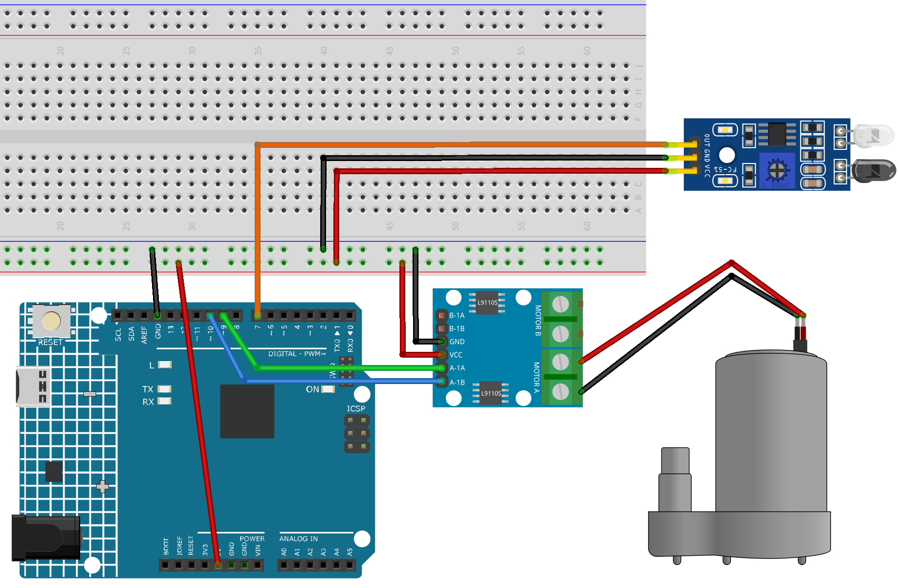

Bemerkung
Hallo und willkommen in der SunFounder Raspberry Pi & Arduino & ESP32 Enthusiasten-Gemeinschaft auf Facebook! Tauchen Sie tiefer ein in die Welt von Raspberry Pi, Arduino und ESP32 mit anderen Enthusiasten.
Warum beitreten?
Expertenunterstützung: Lösen Sie Nachverkaufsprobleme und technische Herausforderungen mit Hilfe unserer Gemeinschaft und unseres Teams.
Lernen & Teilen: Tauschen Sie Tipps und Anleitungen aus, um Ihre Fähigkeiten zu verbessern.
Exklusive Vorschauen: Erhalten Sie frühzeitigen Zugang zu neuen Produktankündigungen und exklusiven Einblicken.
Spezialrabatte: Genießen Sie exklusive Rabatte auf unsere neuesten Produkte.
Festliche Aktionen und Gewinnspiele: Nehmen Sie an Gewinnspielen und Feiertagsaktionen teil.
👉 Sind Sie bereit, mit uns zu erkunden und zu erschaffen? Klicken Sie auf [hier] und treten Sie heute bei!
Automatischer Seifenspender
Das Projekt „Automatischer Seifenspender“ nutzt ein Arduino Uno Board zusammen mit einem Infrarot-Hindernisvermeidungssensor und einer Wasserpumpe. Der Sensor erkennt die Anwesenheit eines Objekts wie einer Hand, was die Wasserpumpe aktiviert, um Seife zu spenden.
1. Schaltkreis aufbauen


2. Programmcode
Öffnen Sie die Datei
04-Automatic_soap_dispenser.inoim Pfadultimate-sensor-kit\fun_project\04-Automatic_soap_dispenseroder kopieren Sie diesen Code in die Arduino IDE.
3. Code-Erklärung
Die Hauptidee dieses Projekts besteht darin, ein berührungsloses Seifenspendersystem zu schaffen. Der Infrarot-Hindernisvermeidungssensor erkennt, wenn sich ein Objekt (wie eine Hand) nähert. Bei Erkennung eines Objekts sendet der Sensor ein Signal an den Arduino, der daraufhin die Wasserpumpe aktiviert, um Seife zu spenden. Die Pumpe bleibt für eine kurze Zeit aktiv, spendet Seife und schaltet dann ab.
Definieren der Pins für den Sensor und die Pumpe
In diesem Code-Ausschnitt definieren wir die Arduino-Pins, die mit dem Sensor und der Pumpe verbunden sind. Pin 7 ist als Sensor-Pin definiert und wir verwenden die Variable
sensorValue, um die von diesem Sensor gelesenen Daten zu speichern. Für die Wasserpumpe verwenden wir zwei Pins, 9 und 10.const int sensorPin = 7; int sensorValue; const int pump1A = 9; const int pump1B = 10;
Einrichten des Sensors und der Pumpe
In der Funktion
setup()legen wir die Modi für die verwendeten Pins fest. Der Sensor-Pin ist alsINPUTeingestellt, da er Daten vom Sensor empfangen wird. Die Pumpen-Pins sind alsOUTPUTeingestellt, da sie Befehle an die Pumpe senden werden. Wir stellen sicher, dass der Pinpump1Bin einemLOW-Zustand (aus) startet und beginnen die serielle Kommunikation mit einer Baudrate von 9600.void setup() { pinMode(sensorPin, INPUT); pinMode(pump1A, OUTPUT); pinMode(pump1B, OUTPUT); digitalWrite(pump1B, LOW); Serial.begin(9600); }
Kontinuierliche Überprüfung des Sensors und Steuerung der Pumpe
In der Funktion
loop()liest der Arduino ständig den Wert vom Sensor mitdigitalRead()und weist ihnsensorValue()zu. Dieser Wert wird dann zum Seriellen Monitor für Debugging-Zwecke ausgegeben. Wenn der Sensor ein Objekt erkennt, wirdsensorValue()0 sein. In diesem Fall wirdpump1AaufHIGHgesetzt, wodurch die Pumpe aktiviert wird, und eine Verzögerung von 700 Millisekunden ermöglicht es der Pumpe, Seife zu spenden. Die Pumpe wird dann durch Setzen vonpump1AaufLOWdeaktiviert, und eine Verzögerung von 1 Sekunde gibt dem Benutzer Zeit, seine Hand wegzubewegen, bevor der Zyklus sich wiederholt.void loop() { sensorValue = digitalRead(sensorPin); Serial.println(sensorValue); if (sensorValue == 0) { digitalWrite(pump1A, HIGH); delay(700); digitalWrite(pump1A, LOW); delay(1000); } }